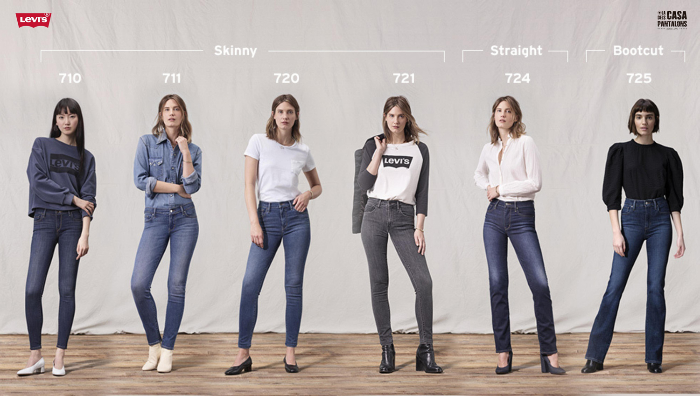
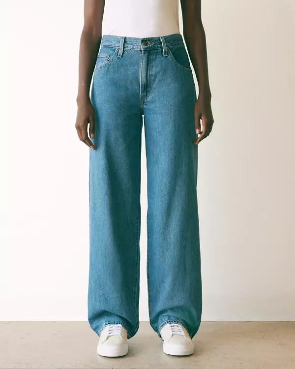
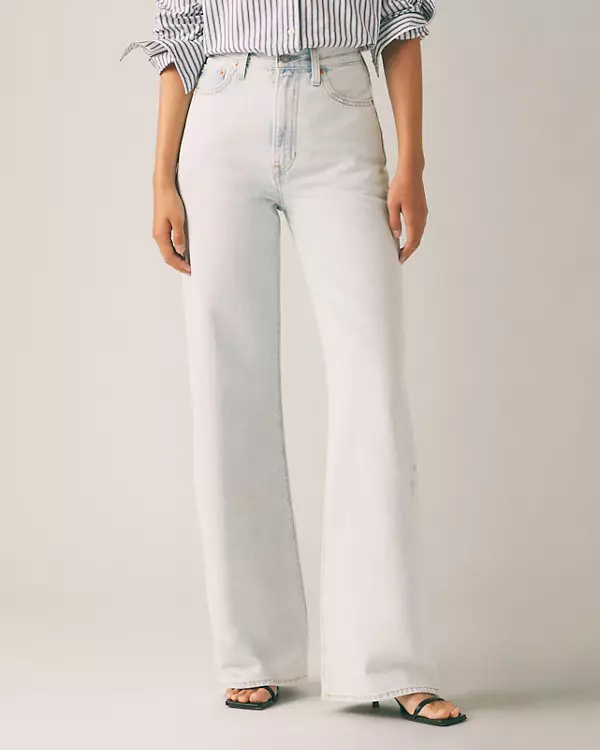
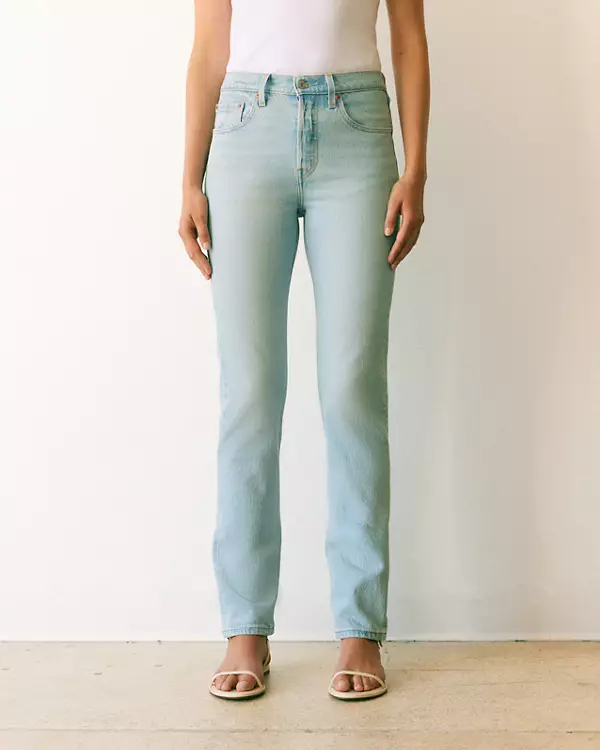
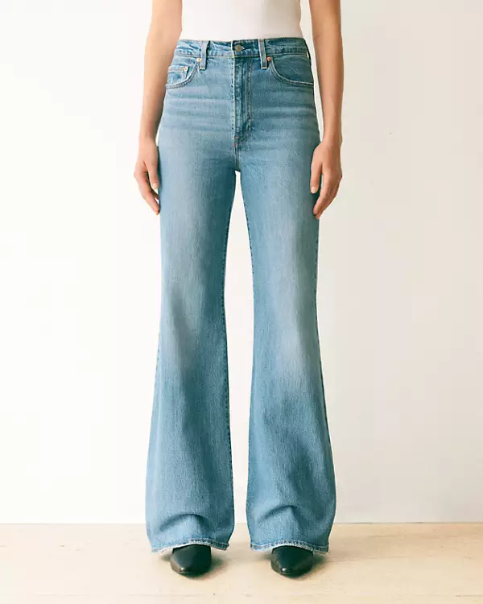

Levi's
Marca emblemática fundada en 1853
Marca emblemática fundada en 1853
tienda en línea dedicada a exhibir y vender prendas de vestir, calzado y accesorios a través de un catálogo digital con compras y envíos a domicilio.

Con más de un siglo y medio de historia, Levi’s es el referente
mundial de la mezclilla y la marca que inventó el pantalón vaquero moderno.
Para facilitar la búsqueda del ajuste ideal entre su amplio catálogo, la
firma clasifica sus prendas mediante un icónico sistema de códigos numéricos
de tres dígitos.

Un corte recto y relajado con mucho espacio desde la cadera hasta el tobillo.

Amplio y holgado desde la cadera y el muslo hasta el dobladillo.

Un clásico. El mismo ancho en la rodilla y en la abertura de la pierna.

Ajusta en la cadera y el muslo, se ensancha desde la pantorrilla hasta el tobillo.